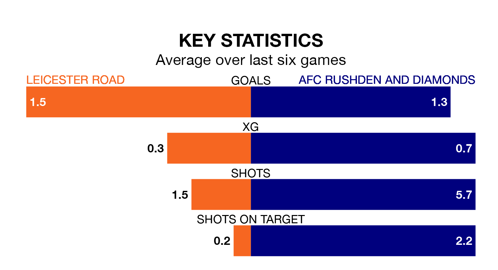

Leicester Road are heavy favourites to keep all three points at home in Saturday's kick-off against AFC Rushden and Diamonds.
Leicester Road, who sit fifth in the Northern Premier League Division One Midlands with 26 games played, are priced at 1.4 to seal victory.
Sitting 15 places and 34 points behind them in the table, Rushden & Diamonds are 5.5 to win with *Betting Company*, while the draw is at 4.5.
With 21 goals in 26 games so far this season, Rushden & Diamonds are the league's lowest scorers with 0.8 goals per game. And they are conceding more than average, letting in 52 goals at a rate of 2.0 per game.
Leicester Road, meanwhile, are above average scorers, with 1.7 goals per game, compared to a league average of 1.5. They have conceded 1.2 goals per game.
The hosts are in reasonable form in the Northern Premier League Division One Midlands, with four wins and two losses from their last six games.
With three wins and two draws over that period, the away side's form is slightly worse – they have taken 11 points from 18, compared to Leicester Road's 12.
Leicester Road's last match was on February 3, a 1-0 loss against Corby Town.
Rushden & Diamonds drew 0-0 with Coventry Sphinx last time out, also on February 3.
Updated: 13:04 (UTC), 16/02/24